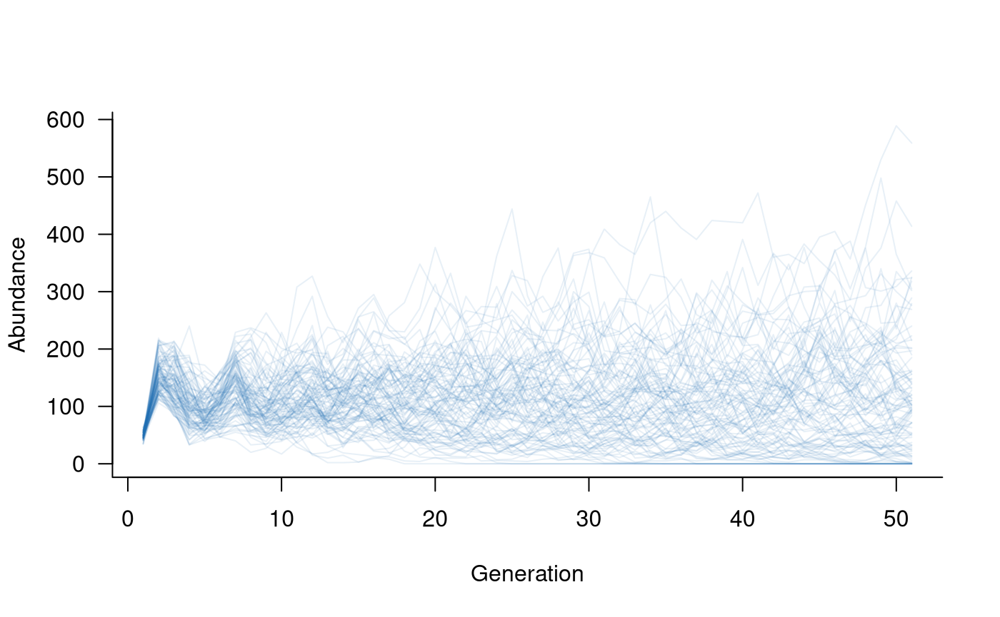
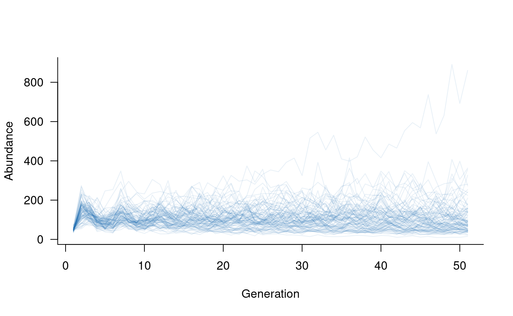
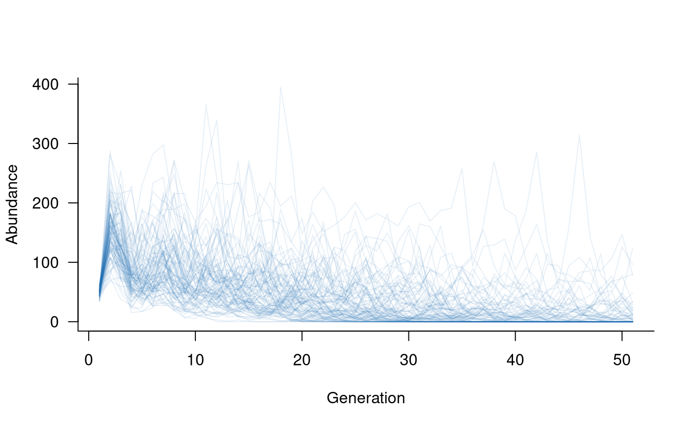
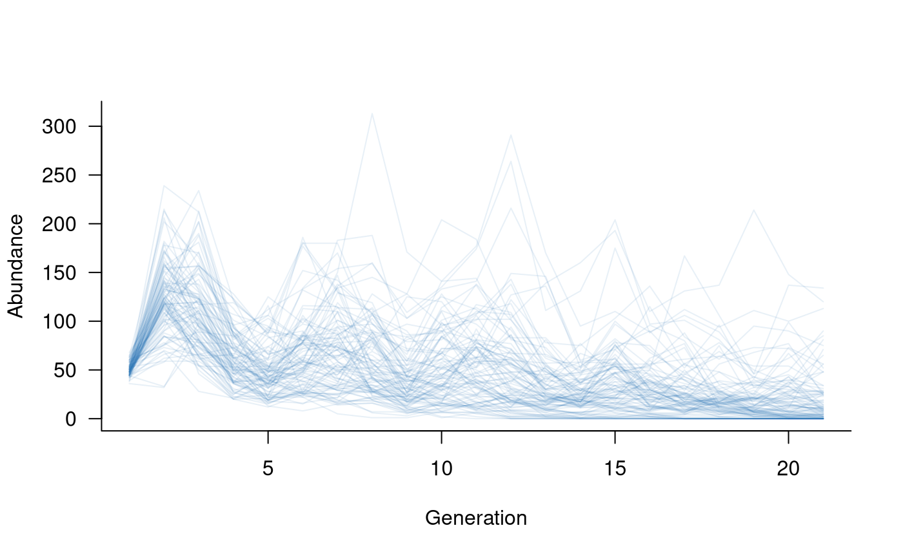

Including demographic processes in a population model
Jian Yen
07/01/2026
Source:vignettes/including_processes.Rmd
including_processes.RmdDemographic processes?
This is a broad term that could mean many things.
aae.pop focuses on five main processes:
demographic stochasticity: random variation in the outcomes of individual processes (e.g. birth, death), resulting in variation in population abundances.
environmental stochasticity: random variation in external conditions, resulting in variation in the vital rates (i.e., the population matrix).
density dependence: variation in vital rates or population outcomes that depends on the abundance of the population. Density dependence can be negative (e.g., due to limited resources) or positive (e.g., Allee effects).
covariate effects: the influence of covariates on the population matrix. In
aae.pop, covariate effects are included primarily to allow the population matrix to change through time in response to external factors (e.g., weather, habitat availability, management interventions).additions or removals: any processes that lead to individuals being added to or removed from a population. Additions and removals are defined broadly but can capture things like population augmentation (e.g., stocking or releases of captive-bred individuals) and targeted removals (e.g., angling or predation).
Two additional processes, dispersal and interspecific interactions, are covered in the Metapopulations and Multiple species vignettes.
An aside: masks
The processes above are unlikely to have consistent effects across
all vital rates or all classes in a population. To deal with this,
aae.pop is built around a concept of masks. Masks
are used to select specific elements of the population matrix, and only
these elements are altered by a given process.
Masks are paired with functions when defining all of the above processes. Masks tell R which cells to target, functions tell R what to do to these cells.
Several helper functions are included to define common masks. These
include the reproduction, survival, and
transition regions of the matrix discussed in the getting started vignette, as well as masks
to select an entire population matrix (all_cells) or
abundance vector (all_classes).
The masks defined in aae.pop return a
TRUE/FALSE matrix or vector that selects the
required cells. Masks are defined in this way because
aae.pop flattens the population matrix in all internal
calculations, which breaks cell-based subsetting (i.e., the
[i, j] R notation will not work). It is possible (but not
advised) to work around this. The discussion below
introduces one way to work around masks and highlights why this might
not be a good idea.
Back to demographic processes
A basic model
Let’s start with the basic model used in the Getting started vignette. This was a Leslie matrix with five age classes, with individuals reproducing from ages 3-5.
popmat <- rbind(
c(0, 0, 2, 4, 7), # reproduction from 3-5 year olds
c(0.25, 0, 0, 0, 0), # survival from age 1 to 2
c(0, 0.45, 0, 0, 0), # survival from age 2 to 3
c(0, 0, 0.70, 0, 0), # survival from age 3 to 4
c(0, 0, 0, 0.85, 0) # survival from age 4 to 5
)This is sufficient to start simulating population dynamics, using the
dynamics and simulate functions. However,
adding additional processes requires a few more steps first.
Demographic stochasticity
Random variation in individual outcomes is a key feature of most population models. This variation is most important (and influential) when populations are small, so that a few small events (e.g., several individuals failing to reproduce) can have a big effect on population outcomes.
Demographic stochasticity will be defined here with a single
mask and its corresponding function. The
simplest form of demographic stochasticity in this case is Poisson
variation around the expected number of individuals in the next
generation. This can be coded as:
demostoch_mask <- all_classes(popmat) # affects all classes
demostoch_fn <- function(x) {
rpois(length(x), lambda = x)
}Here, the mask selects all classes in the population
vector and the function takes this vector x
and returns random Poisson variates with mean equal to x.
Note that this function potentially allows the number of surviving
individuals in a class to exceed the number of available individuals
because the Poisson distribution does not have an upper bound. A
workaround for this, using the Binomial distribution, is covered in the
Beyond defaults vignette.
The mask/function pair can be combined into
a single object with the demographic_stochasticity
function.
demostoch <- demographic_stochasticity(
masks = demostoch_mask,
funs = demostoch_fn
)The resulting demostoch object can be passed directly to
dynamics, along with the population matrix. In turn, this
creates a dynamics object that can be used in
simulate.
# create population dynamics object
popdyn <- dynamics(popmat, demostoch)
# simulate population dynamics
sims <- simulate(popdyn, nsim = 100)
# plot the population trajectories
plot(sims, col = alpha("#2171B5", 0.4))
This simple example includes one mask/function pair, but the
demographic_stochasticity function can chain together as
many different mask/function pairs as required. In these cases, there
should be one mask for each function, and the set of masks/functions
should be passed to demographic_stochasiticity as a list
(e.g., masks = list(demostoch_mask1, demostoch_mask2)).
Environmental Stochasticity
Environmental stochasticity will be defined here with two masks and their corresponding functions. The simplest form of variation in reproduction is Poisson variation around the expected number of new individuals. This can be coded as:
reproduction_mask <- reproduction(popmat, dims = 3:5) # only ages 3-5 reproduce
reproduction_fn <- function(x) {
rpois(length(x), lambda = x)
}Here, the mask selects the reproductive output of age
classes 3 to 5 in the population matrix and the function
takes this vector x and returns random Poisson variates
with mean equal to x.
The second mask/function pair will add
variation in survival outcomes. In this case, a simple form of variation
is to add or subtract some small value from the survival probabilities.
This can be coded up as:
transition_mask <- transition(popmat) # all classes this time
transition_fn <- function(x) {
# add a random deviation to x
deviation <- runif(length(x), min = -0.1, max = 0.1)
x <- x + deviation
# make sure the result isn't negative or greater than 1
x[x < 0] <- 0
x[x > 1] <- 1
# return the value
x
}Here, the mask selects all elements on the sub-diagonal
of the population matrix, and the function takes some
vector x and returns a new value with a deviation between
-0.1 and 0.1. There is one extra check in the function to make sure that
the new probabilities are still probabilities (i.e., still between 0 and
1).
These two mask/function pairs can be
combined into a single object with the
environmental_stochasticity function.
envstoch <- environmental_stochasticity(
masks = list(reproduction_mask, transition_mask),
funs = list(reproduction_fn, transition_fn)
)The resulting envstoch object can be passed directly to
dynamics, along with the population matrix. In turn, this
creates a dynamics object that can be used in
simulate.
# create population dynamics object
popdyn <- dynamics(popmat, envstoch)
# simulate population dynamics
sims <- simulate(popdyn, nsim = 100)
# plot the population trajectories
plot(sims, col = alpha("#2171B5", 0.4))
It is easy to include both environmental and demographic
stochasticity in the same model. The dynamics call simply
needs both envstoch and demostoch objects.
This is a case where the update function comes in handy.
Rather than re-defining the population dynamics object, the existing
version of popdyn (which included popmat and
envstoch) can simply be updated to include
demostoch:
Density dependence
Density dependence occurs when vital rates or individual outcomes depend on population abundance. The most common form of density dependence in population ecology is negative density dependence, that is, a reduction in vital rates with increases in population abundance. Negative density dependence is typically observed as changes in reproduction due to, for example, increased competition for resources resulting in high mortality of new individuals.
Density dependence can be included in exactly the same way as
environmental stochasticity: a mask tells R which cells in
the population matrix are affected by abundances and a
function tells R what to do with these cells. In this case,
the function is passed the vital rates as well as the
vector of abundances in each population class.
aae.pop has pre-defined functions for two common forms
of density dependence: the Ricker model and the
Beverton-Holt model. The Ricker model assumes that mortality
rates of new individuals are proportional to adult population size due
to scramble competition (equal division of resources). The
Beverton-Holt model assumes that mortality rates of new individuals are
linearly dependent on the number of individuals due to contest
competition (unequal division of resources). Importantly, the
Ricker model is overcompensatory, which means it can increase
mortality rates to the point of complete mortality. This does not occur
under the Beverton-Holt model.
In aae.pop, both models are specified with two
parameters: k, that represents the carrying
capacity of the population; and theta, which
represents the strength of density dependence. theta
re-scales population sizes, so is mathematically equivalent to adjusting
k (e.g., theta = 0.5; k = k and
theta = 1; k = 2 * k will give the same outcome). Both
functions include one extra argument, exclude, which allows
estimates of carrying capacity to be defined for a subset of population
classes (e.g., adult abundances only). A Ricker model can be specified
as follows:
# specify a Ricker model for density dependence
dd <- density_dependence(
masks = reproduction(popmat, dims = 3:5), # only adults reproduce
funs = ricker(k = 40, exclude = 1:2) # set k based on adult abundances
)
# update the population dynamics object to include density dependence
popdyn <- update(popdyn, dd)
# simulate population dynamics
sims <- simulate(popdyn, nsim = 100)
# plot the population trajectories
plot(sims, col = alpha("#2171B5", 0.4))Density dependence can take many other forms. These forms may include positive density dependence (e.g., Allee effects) or may affect adult abundances as well as reproduction. The next section introduces an example of the latter.
A different form of density dependence
Density dependence is most commonly assumed to affect only the new
individuals entering the population. However, it is possible that
density dependence also affects adults, for example, when high
abundances limit access to suitable habitat. Effects on adult survival
could be modelled using the approach outlined in the previous section,
with transition or survival masks alongside
the reproduction mask.
An alternative approach is to model density dependence through its direct effects on population abundances. Although not linked directly to vital rates (e.g., survival), this approach can be easier to implement and can capture processes that do not directly affect vital rates, such as fishing, hunting, or logging.
The add_remove_pre and add_remove_post
functions can be used to define this form of density dependence
(_pre: before reproduction; _post: after
reproduction). These functions are described in more detail below and
replace the now-deprecated density_dependence_n function.
In this case, the mask needs to select the relevant classes
in the population, and the function takes only one
argument, the vector of population abundances. This approach can be
implemented as follows:
# specify density dependence that removes 10 % of adults in each generation
dd_n <- add_remove_post(
masks = all_classes(popmat, dims = 3:5), # want to focus on adults
funs = function(n) 0.9 * n # define in-line function to return
# 90 % of adult population
)
# create a new population dynamics object
popdyn <- dynamics(popmat, envstoch, demostoch, dd_n)
# simulate population dynamics
sims <- simulate(popdyn, nsim = 100)
# plot the population trajectories
plot(sims, col = alpha("#2171B5", 0.4))
Covariates
Population dynamics often depend on external factors
(covariates, here). aae.pop uses the
mask/function approach described above to
include the effects of covariates on vital rates. The
function takes the vital rates as the first argument,
followed by any arguments required to specify covariate values or their
effects. An example illustrates this most clearly:
# set up 20 years of covariates, such as proportion of available nesting sites
nesting <- runif(20, min = 0.5, max = 1.0) # 50 % to 100 % of total sites available in each year
# define the mask
covar_mask <- reproduction(popmat, dims = 3:5) # assume nesting sites only affect reproduction
# define a function that links vital rates to the covariates
# (dots to soak up any extra arguments passed to other functions)
covar_fn <- function(x, nests, ...) {
x * nests # really simple function, assume the proportion of successful reproduction
# attempts is equal to the proportion of nests
}
# combine this into a covariates term
covs <- covariates(covar_mask, covar_fn)
# create population dynamics object (without density dependence)
popdyn <- dynamics(popmat, envstoch, demostoch, covs)
# simulate population dynamics
sims <- simulate(
popdyn,
nsim = 100,
args = list(covariates = format_covariates(nesting))
)
# plot the population trajectories
plot(sims, col = alpha("#2171B5", 0.4))
Specifying a covariates term does not automatically
include covariates in the model. Note that the nesting
variable also had to be passed to simulate via the
args argument. The reason for this is that it allows a
single population dynamics object (popdyn, above) to be
used with multiple different sets of covariates, without re-compiling
the dynamics object each time.
The format_covariates function is included to format
covariate values into a list with one element per time step. These
formatted covariates can be combined with static covariates by collating
everything into a super-list:
sims <- simulate(
popdyn,
nsim = 100,
args = list(
covariates = c(
format_covariates(nesting),
list(static_argument1 = 0.05),
list(static_argument2 = 100)
)
)
)aae.pop assumes that at least one argument to
covariates changes through time, so a consequence of
specifying covariates is that the vector/matrix of covariates determines
the number of simulated time steps (n_time). In the above
example, there were 20 values of nesting, which translates
to 21 time steps (initial condition plus 20 updates).
It is assumed that covariates will be passed as a list with one
element for each time step. More complex covariate terms
are possible, such as a combination of static and dynamic arguments or
functions that specify arguments based on the current state of the
population. These terms can be passed to simulate via the
args argument (see help files for
format_covariates for examples).
Fine-grained control of covariate effects
Simulated populations can include The default covariates
terms are applied consistently to all replicate trajectories. In some
cases, it may be useful to specify covariate effects specific to each
trajectory. The replicated_covariates process is included
to address this situation, and allows covariate functions to act on the
full vector of vital rates with replicate-specific arguments and
effects.
The simplest way to set up (and visualise) a
replicated_covariates term is to define a matrix with
nsim columns and ntime rows. Each column in
this matrix specifies the covariate values/arguments applied to a single
replicate trajectory, and each row specifies the effects (for all
replicates) at a single time step.
One application of replicated_covariates (and the reason
this approach was developed) is to allow both variation and uncertainty
in vital rates in a single simulation. With this structure, the input
matrix can be defined with variation (e.g., representing environmental
variability) around different mean values (representing uncertainty),
without having to run multiple simulations.
# set up 20 years of covariates, such as proportion of available nesting sites,
# but now with a different minimum (and, therefore, mean) value for each replicate
nesting <- do.call(cbind, lapply(runif(100, min = 0.5, max = 0.8), \(x) runif(20, min = x, max = 1.0)))
# define the mask
covar_mask <- reproduction(popmat, dims = 3:5) # assume nesting sites only affect reproduction
# define a function that links vital rates to the covariates
# (dots to soak up any extra arguments passed to other functions)
covar_fn <- function(x, nests, ...) {
x * nests # really simple function, assume the proportion of successful reproduction
# attempts is equal to the proportion of nests
}
# combine this into a covariates term
covs <- replicated_covariates(covar_mask, covar_fn)
# create population dynamics object (without density dependence)
popdyn <- dynamics(popmat, envstoch, demostoch, covs)
# simulate population dynamics
sims <- simulate(
popdyn,
nsim = 100,
args = list(replicated_covariates = format_covariates(nesting))
)
# plot the population trajectories
plot(sims, col = alpha("#2171B5", 0.4))
Adding or removing individuals from a population
Many processes might lead to individuals being added to or removed
from a population. The add_remove_pre and
add_remove_post functions are defined generically to
capture any such process, with the pre version being
applied prior to reproduction and the post version applied
following reproduction. Similar to demographic stochasticity, additions
and removals act on the population state vector (the counts in each
class) rather than the population matrix (the vital rates). Importantly,
add_remove_pre is the only way in which the state vector
can be modified before reproduction.
Examples of additions include fish stocking and releases of captive-bred individuals. Examples of removals include angling or predation of individuals, noting that both could also be applied as covariates acting on survival rates. A simple example can illustrate the general approach.
# set up a release of 10 individuals each year into the first age class,
# occurring after reproduction
captives <- add_remove_post(
masks = all_classes(popmat, dims = 1),
funs = \(x) x + 10
)
# repeat to remove 2 adults via predation each year, prior to reproduction
predators <- add_remove_pre(
masks = all_classes(popmat, dims = ncol(popmat)),
funs = \(x) ifelse(x >= 2, x - 2, 0)
)
# create population dynamics object (without density dependence)
popdyn <- dynamics(popmat, envstoch, demostoch, captives, predators)
# simulate population dynamics
sims <- simulate(
popdyn,
nsim = 100
)
# plot the population trajectories
plot(sims, col = alpha("#2171B5", 0.4))
What if I don’t want to use masks?
The mask/function approach is central to
aae.pop. This approach allows multiple functions to be
combined into a single term and makes it easier to keep track of (and
update) individual functions or masks. A secondary reason for this
approach is computational. Rarely will any demographic processes act on
the entire population matrix. When dealing with large matrices (e.g.,
50-100 classes), it’s much more efficient to pass small parts of the
matrix than the entire matrix.
There might be situations where the entire population matrix does
need to be modified by a given process. This is still supported in
aae.pop through the all_cells
mask. However, it isn’t possible to subset the matrix
within a function using R’s standard [i, j]
notation. This is because the functions within aae.pop
receive a flattened (and masked) version of the population matrix, which
actually looks like:
# reproduction mask
popmat[reproduction(popmat, dims = 3:5)]## [1] 2 4 7or
# transition mask
popmat[transition(popmat)]## [1] 0.25 0.45 0.70 0.85or
# all elements
popmat[all_cells(popmat)]## [1] 0.00 0.25 0.00 0.00 0.00 0.00 0.00 0.45 0.00 0.00 2.00 0.00 0.00 0.70 0.00
## [16] 4.00 0.00 0.00 0.00 0.85 7.00 0.00 0.00 0.00 0.00If it’s essential to use [i, j] subsetting inside a
function, a workaround is to reconstruct the matrix within the function
by passing the dimensions through the args argument in
simulate. This might look a bit like:
# define a function
no_mask_fn <- function(x, dim) {
# reconstruct matrix
x <- array(x, dim = dim)
# change elements with [i, j] notation
x[2, 1] <- 0.6 * x[2, 1]
x[3, 2] <- 1.25 * x[3, 2]
# return
x
}
# set this up as a form of environmental stochasticity
envstoch <- environmental_stochasticity(
masks = all_cells(popmat), # pass the entire matrix
funs = no_mask_fn # use the no-mask function
)
# create population dynamics object (without density dependence)
popdyn <- dynamics(popmat, envstoch)
# simulate population dynamics
sims <- simulate(
popdyn,
nsim = 100,
args = list(environmental_stochasticity = list(dim = dim(popmat)))
)
# plot the population trajectories
plot(sims, col = alpha("#2171B5", 0.4))